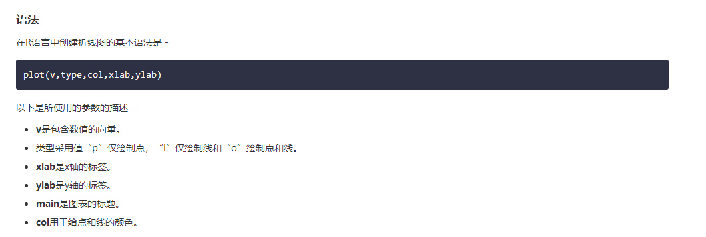

4）折线图：
折线图是通过在它们之间绘制线段来连接一系列点的图。 这些点在它们的坐标（通常是x坐标）值之一中排序。 折线图通常用于识别数据中的趋势。
R语言中的plot()函数用于创建折线图。

示例：
多线型折线图：通过使用lines()函数，可以在同一个图表上绘制多条线。在绘制第一行之后，lines()函数可以使用一个额外的向量作为输入来绘制图表中的第二行
# Create the data for the chart.
v <- c(7,12,28,3,41)
t <- c(14,7,6,19,3)
# Give the chart file a name.
png(file = "line_chart_2_lines.jpg")
# Plot the bar chart.
plot(v,type = "o",col = "red", xlab = "Month", ylab = "Rain fall",
main = "Rain fall chart")
lines(t, type = "o", col = "blue")
# Save the file.
dev.off()